정보통신기사(구) (2006-03-05 기출문제)
1과목: 디지털 전자회로
1. 증폭기 중에서 트랜지스터가 오직 반주기 동안만 활성영역에 있고 나머지 반주기 동안은 차단영역에 있는 증폭기는?
- A급 증폭기
- B급 증폭기
- AB급 증폭기
- C급 증폭기
(정답률: 알수없음)

2. JK플립플롭(Flip-Flop)을 다음 그림과 같이 연결했을 때 어떤 것과 같은가?
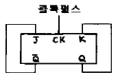
- D 플립플롭
- RS 플립플롭
- T 플립플롭
- 래치(LATCH)
(정답률: 알수없음)
3. one-short 멀티바이브레이터로부터 49[㎲]의 펄스폭이 주어질 때 이를 만드는데 필요한 대략 시정수는?
- 65 [㎲]
- 70 [㎲]
- 75 [㎲]
- 80 [㎲]
(정답률: 알수없음)
4. 다음 로직회로(LOGIC CIRCUIT)의 출력은?
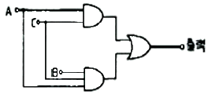
- AB
- AC
- ABC
- AB+AC
(정답률: 알수없음)
5. 차동증폭기의 동상제거비(COMMON MODE REJECTION RATIO)를 향상시키기 위한 방법으로 적합하지 않는 것은?
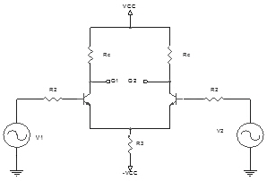
- hfe가 큰 트랜지스터를 선정한다.
- Emitter 저항 RE의 값을 높은 값으로 선정한다.
- 입력 임피던스를 높이기 위해 RS를 크게 선정한다
- Q1, Q2는 전기적 특성이 동일한 트랜지스터를 선정한다.
(정답률: 알수없음)
6. 바이어스 전압에 따라 공간 전하용량이 달라지는 다이오드는?
- Zener Diode
- LCD
- Tunnel Diode
- Varactor Diode
(정답률: 알수없음)
7. 증폭기 입력측에 구형파를 가하고 출력측에서 측정된 상승시간(rise time)이 0.35[㎲]였다. 이 증폭기의 고역3[㏈] 차단주파수는 몇[㎒]인가?
- 0.5
- 1
- 2
- 10
(정답률: 알수없음)
8. 3개(A, B, C)의 입력 펄스에 대한 출력(X)동작은 어느 게이트에 해당하는가?
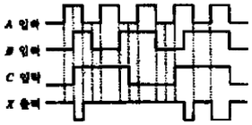
- AND
- NAND
- OR
- NOR
(정답률: 55%)
9. 진폭변조에서 반송파의 주파수를 fc 변조신호의 주파수를 fs라고 할 때, AM파의 대역폭은 다음 중 어떤 수식으로 표현되는가?
- fc + fs
- fc – fs
- fs
- 2fs
(정답률: 알수없음)
10. Q가 10 이고, 공진주파수가 1[㎒]인 동조회로의 공진시 임피던스(Impedance)는 약 얼마인가? (단, 1[mH] 라한다)
- 15.7[㏀]
- 38.2[㏀]
- 51.4[㏀]
- 62.8[㏀]
(정답률: 알수없음)
11. 그림과 같은 OP증폭기의 출력전압 VO를 구하시오. (단,
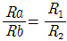
임.)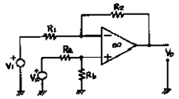
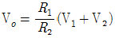
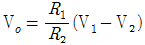
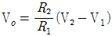
- VO = R1R2(V2-V1)
(정답률: 알수없음)
12. 그림과 같은 연산증폭기의 –3[㏈] 저역 하한주파수는? (단, 주파수대역은 중역(midband) 에 속한다.)
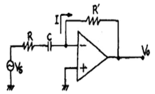
- 1/2πRC
- 1/2πR'C
- 1/2π(R + R’)C
- 1/2πRR'C
(정답률: 알수없음)
13. 다음 그림과 같은 비반전 연산 증폭기 회로에서 부하 R1에 흐르는 전류는? (단, R1=1㏀, R2=2㏀, RL=3㏀, VI=2V )
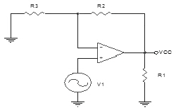
- 1mA
- 2mA
- 3mA
- 4mA
(정답률: 알수없음)
14. 그림과 같은 발진회로의 출력파형은?
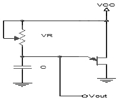
- 톱니파
- 정현파
- 구형파
- 펄스파
(정답률: 알수없음)
15. 플립-플롭 4개로 구성된 계수기가 가질 수 있는 최대의 2진 상태는 몇 가지인가?
- 8가지
- 12가지
- 16가지
- 20가지
(정답률: 알수없음)
16. 그림과 같은 증폭호로에서 커패시터 C의 주된 역할은?
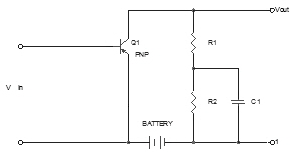
- 기생진동 방지용
- 발진방지용
- 정전용량 중화용
- 저주파 특성 개선용
(정답률: 알수없음)
17. 다음 Karnaugh도를 간략화 한 결과는?
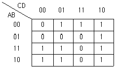
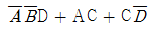
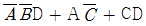
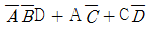
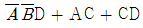
(정답률: 알수없음)
18. FM 변조에서 변조지수가 6이고 신호주파수가 3[㎑]일 때 주파수편이는 얼마인가?
- 6[㎑]
- 9[㎑]
- 18[㎑]
- 36㎑
(정답률: 알수없음)
19. 부울방정식 Y = ABC + ABC + ABC 를 간단히 하면?
- AB
- AC
- ABC
- A(B+C)
(정답률: 알수없음)
20. 다음과 같은 정논리회로의 게이트 기능은?
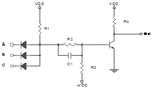
- NOR
- NOT
- NAND
- AND
(정답률: 알수없음)
2과목: 정보통신 시스템
21. HDLC(High-level Data Link Control)전송 제어절차의 특징이 아닌 것은?
- 통신 방식에 구애를 받는다.
- 신뢰성을 높일 수 있다.
- 전송 제어상의 제한을 받지 않는다.
- 다양한 데이터 링크 형태에 적용할 수 있다.
(정답률: 알수없음)
22. 다음 중 LAN을 사용하는 시스템의 정량적인 평가척도로 올바른 것은?
- 운용시간, 통신소프트웨어
- 통신장비, 전송효율
- 응답시간, 시스템신뢰도
- 회선종류, 전송거리
(정답률: 알수없음)
23. 그림은 프로토콜 계층구조에서 인접한 계층간의 데이터 전송을 나타낸 것이다. 빗금친 부분이 의미하는 것은?
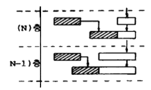
- Protocol Data Unit
- Interface Data Unit
- Service Data Unit
- Protocol Control Information
(정답률: 알수없음)
24. 고정 통신망과 같이 이동통신 분야에서도 디지털 방식의 상용화 서비스가 보편적으로 진행되고 있다. 이동 통신을 디지털화 하는 목적이 아닌 것은?
- 고품질의 서비스
- 비화의 용이성
- 기기의 소형화
- 통신량의 소용량화
(정답률: 알수없음)
25. 광파장 분할 다중화방식(Wavelength Division Multiplexing)에 관한 것으로 가장 관계가 먼 것은?
- 양방향전송이 가능하다.
- 선로의 증설없이 회선의 증설이 용이하다.
- TV와 음성신호의 동시전송이 가능하다.
- PCM 방식에서만 가능하다.
(정답률: 알수없음)
26. 시외전화용 통신망의 루트를 계획할 경우 우선 몇 개의 루트를 선정한 후 그 중에서 하나를 선택한다. 다음 설명 중 틀린 것은?
- 경제적으로 비교해서 가장 유리한 루트를 선택한다.
- 도로굴착허가를 받을 수 있는 루트를 선택한다.
- 전기통신공사업자가 추진하는 루트를 선택한다.
- 건설 후 유지 보수가 용이한 루트를 선택한다.
(정답률: 알수없음)
27. 메시지 통신시스템(Message Handling System)의 주서비스 기능과 관계가 없는 것은?
- 복수의 수신자에게 같은 메시지를 전달
- 메시지의 발신시각, 부호화 정보형태 등의 표시
- 이기종 단말간 통신
- ITU-T X.800 권고에 의한 프로토콜 적용
(정답률: 알수없음)
28. 비동기식 시스템의 액세스 제어기술 방식이 아닌 것은?
- 라운드-로빈(Round-Robin)방식
- 예약(Reservation)방식
- 경쟁(Contention)방식
- 회선교환방식
(정답률: 알수없음)
29. OSI 망관리시스템에서 요구사항에 해당되지 않는 것은?
- 망관리 기능에 의해서 네트워크 성능을 심각하게 저하 시켜서는 안된다.
- 상세한 모니터링 기능과 제어기능을 제공한다.
- 망에서 요구될 수 있는 광범위한 종류의 관리기능을 제공 한다.
- 망관리에 필요한 결정사항 및 제어를 위한 절차들은 망 환경이 변경된 이후에 이루어져야 한다.
(정답률: 알수없음)
30. 통신서비스 구현에 사용되는 교환방법 중 동기식 트래픽 전송에 가장 적합한 방법은?
- 패킷교환
- 회선교환
- 메시지교환
- 데이터그램
(정답률: 알수없음)
31. 4[㎑]까지의 음성신호를 완전히 재생시키기 위한 표본화 주기는 몇[㎲]인가?
- 250
- 200
- 125
- 100
(정답률: 알수없음)
32. 다음 중 SSB 통신방식의 특징과 가장 관계 없는 것은?
- 주파수 안정도가 낮아도 양질의 통신이 가능하다.
- 작은 전력으로 양질의 통신이 가능하다.
- 비화성을 유지할 수 있다.
- DSB에 비해 3dB 정도의 S/N비가 개선 된다.
(정답률: 알수없음)
33. 다음 중 ISDN 의 기본인터페이스 채널 구조는?
- 23B+D
- 30B+D
- 2B+D
- 8B+D
(정답률: 알수없음)
34. 인터넷 폰에서 가장 중요하게 고려해야 할 전송 특징은?
- 지연
- 잡음
- 간섭
- 손실
(정답률: 알수없음)
35. 그림의 프레임 구조와 기술적으로 관련이 없는 것은?
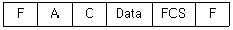
- 비트 스터핑(Bit Stuffing)
- 동기형 프로토콜
- HDLC
- 문자지향 프로토콜
(정답률: 알수없음)
36. 다음 중 전송망에서 무왜곡조건이란?
- RC=LG
- RG=

- RL=CG
- RC=

(정답률: 알수없음)
37. OSI 7 계층 중 통신망내 연결의 설정, 유지, 해제 등을 제어하기 위한 기능과 절차를 제공하는 계층은?
- 물리계층
- 네트워크계층
- 세션계층
- 응용계층
(정답률: 알수없음)
38. 다음 프로토콜 중 트랜스포트 계층에 속하는 것은?
- TCP(Transmission Control Protocol)
- MTP(MessageTransfer Protocol)
- FTP(File Transfer Protocol)
- VTP(Virtual Terminal Protocol)
(정답률: 알수없음)
39. 디지털통신 시스템을 설계하는 경우 설계 목표가 아닌 것은?
- 최대의 데이터 전송률
- 최소의 에러
- 최대의 전송 전력
- 방해 신호에 대한 최대 방지
(정답률: 알수없음)
40. 샤논(Shanon)정리인 회선 최대 통신용량(C)의 식을 바르게 표현한 것은? (단, W:주파수대역 S:신호전력레벨 , N: 잡음전력레벨)
- C= 2W log2(1+S/N)
- C= W log2(1+S/N)
- C= 2W loge(1+S/N)
- C= W loge(1+S/N)
(정답률: 알수없음)
3과목: 정보통신 기기
41. 다음 중 비디오 텍스의 특징이 아닌 것은?
- 컴퓨터와 통신에 대한 전문적인 지식이 없는 사용자도 정보 센터로부터 필요한 정보를 제공 받을 수 있다.
- 정보 센터에는 많은 양의 정보를 가지고 있으므로 사용자가 필요한 주제에 대한 충분한 정보 입수가 가능하다.
- 정보 센터에서 정보를 갱신하면 언제나 새로운 정보를 얻을 수 있다.
- 단방향 통신 기능으로 인해 다양한 서비스를 받을 수 없다.
(정답률: 알수없음)
42. 프로토콜이 다른 LAN을 연결할 때 또는 LAN을 WAN에 접속할 경우 사용하며 동일한 망(Network) 내에서 주고받는 데이터는 망 내에서만 전송되도록 제한을 가하여 불필요한 작업량을 제거하여 주는 장비는?
- 허브(HUB)
- 스위치(Switch)
- 라우터(Router)
- 리피터(Repeater)
(정답률: 알수없음)
43. 다음 중 광전펜으로 직접 입력 하거나 그림, 챠트 등을 직접 읽어 컴퓨터에 입력시키는기기는?
- FSS(Flying Spot Scanner)
- 드럼 스캐너
- Digitizer
- 더모그래프(Thermograph)
(정답률: 알수없음)
44. 정보 통신 시스템의 구성요소 중에서 정보 전송계에 속하지 않는 것은?
- 단말장치
- 신호변환장치
- 보조기억장치
- 통신제어장치
(정답률: 알수없음)
45. 전화기의 통화회로를 구성하는 요소가 아닌 것은?
- 유도선륜
- 벨(Bell)
- 송화기
- 수화기
(정답률: 알수없음)
46. 두선으로 연결된 통신선로를 이용하여 ADSL(비대칭디지털가입자선) 단말기에서 상향 데이터와 하향 데이터를 구분해주는 단말기 구성부는?
- 반향 제거기
- 시분할 분석기
- 파장 다중화기
- 코드 분할 다중화기
(정답률: 알수없음)
47. 다음은 CATV에 대한 설명이다. 옮지 않은 것은?
- CATV의 기본구성은 헤드엔드, 중계전송망 및 가입자 설비 등으로 구분된다.
- 쌍방향 CATV는 가입자측에서 센터로 정보 전송을 할 수 있도록 전송로를 구성하고 서비스를 고도화 한 것이다.
- CATV의 중계전송망은 분기증폭기, 다중화기, 가입자측 모뎀 및 분배기 등으로 구성된다.
- 쌍방향 CATV는 가입자장비에 프로세서와 RAM이 추가되어 정보통신서비스가 가능하다.
(정답률: 알수없음)
48. 마이크로파 통신의 중계방식이 아닌 것은?
- 헤테로다인 중계방식
- 검파중계방식
- 직접중계방식
- 직렬중계방식
(정답률: 알수없음)
49. 역다중화기(Inverse Multiplexer)에 대한 설명 중 틀린 것은?
- 2개 또는 6개 이상의 음성 대역 회선을 사용하여 고속 전송을 한다.
- 똑같은 통신 용량의 회선을 사용하므로 데이터 지연의 차이가 없다.
- 라인플렉서 또는 바이플렉서 라고도 한다.
- 통신회선의 고장 발생시 통신망의 경로 설정에 있어서 유연성을 가지고 있다.
(정답률: 알수없음)
50. 컴퓨터 포트와 단말기 사이에서 사용하여 포트의 증가없이 다수의 단말기를 연결하여 평균 이용률이 낮은 포트에 입력 데이터를 전송하여 전처리기의 사용 효율을 얻을 수 있는 장치는?
- 포트 공동 이용기
- 포트 셀렉터
- 모뎀 공동 이용기
- 병렬 인터페이스 확장기
(정답률: 알수없음)
51. 다음 공동이용기에 대한 설명 중 잘못 된 것은?
- 모뎀공동이용기를 이용하는 단말기는 거리에 제한이 있다.
- 모뎀공동이용기, 선로공동이용기, 포트공동이용기 등이 있다.
- 다중화기보다는 구조가 복잡하고 비용이 증가된다.
- 모뎀공동이용기는 인터페이스 선택 항목으로 RS-232C를 사용할 수 있다.
(정답률: 알수없음)
52. 다음 중 CCTV의 설치와 관계가 먼 것은?
- CCTV를 아파트에서 난시청 해소용으로 설치하였다.
- CCTV를 지하철에 설치하였다.
- CCTV를 은행금고에 설치하였다.
- CCTV를 범죄발생률이 높은 지역에 설치하였다.
(정답률: 알수없음)
53. 멀티포인트 모뎀에서의 지연 간 파라미터가 아닌 것은?
- 모뎀의 지연시간
- 단말기의 지연시간
- 전송선로에 따른 지연시간
- 거리에 따른 지연시간
(정답률: 알수없음)
54. 다음 중 위성통신방식이 아닌 것은?
- 랜덤위성방식
- 위상위성방식
- 정지위성방식
- 이동위성방식
(정답률: 알수없음)
55. 다음 중 텔레텍스트(TELETEXT)를 가장 잘 설명한 것은?
- 방송형태의 정보를 제공하는 서비스로 문자다중방송이라한다.
- 시스템은 정보제공자, 정보수용자, 정보가공, 축적, 분배자로 구성된다.
- 필요한 정보를 전화와 텔레비전으로 받아본다.
- 정보수요자 모두가 정보제공자가 될 수 있다.
(정답률: 알수없음)
56. TDX-10 교환기의 하드웨어 구성요소가 아닌 것은?
- Access Switching Subsystem
- Interconnection Network Subsystem
- Administrative Module Subsystem
- Central Control Subsystem
(정답률: 알수없음)
57. 다음 중 발진기의 주파수 안정도를 양호하게 하기 위한 설명이 아닌 것은?
- 부하변동의 영향을 막기 위해 완충증폭기를 사용한다.
- 수정 공진자를 항온조에 넣고 온도에 의한 영향을 감소시킨다.
- 발진기의 후단증폭기를 동작시키는데 필요한 안정된 출력이 얻어질 것
- 발진주파수의 변동을 방지하기 위하여 증폭전압을 사용한다.
(정답률: 알수없음)
58. 디지털 전화기의 특징이 아닌 것은?
- 총통신비용의 고가격화
- 고품질 통화
- 다기능 통화기능
- 통신 기능의 확장
(정답률: 알수없음)
59. EIA의 RS-232C 25 핀 접속규격 중 핀번호의 설명이 잘못된 것은?
- 핀2번 : 데이터 송신(TD)
- 핀4번 : 송신요구(RTS)
- 핀6번 : 데이터 세트 준비완료(DSR)
- 핀8번 : 데이터 단말 준비완료(DTR)
(정답률: 54%)
60. 다음 중 위성에 장착하는 안테나와 가장 거리가 먼 것은?
- 파라볼라 안테나
- 혼 안테나
- 카세그레인 안테나
- 헤리컬 안테나
(정답률: 알수없음)
4과목: 정보전송 공학
61. ADM에 대한 설명 중 잘못된 것은?
- 적응형 양자화를 수행한다.
- DM 보다 양자화잡음 및 과부화잡음이 경감된다.
- 1비트 양자화를 수행한다.
- 양자화계단의 크기가 고정되어 있다.
(정답률: 알수없음)
62. 광 파이버를 굴절율 분포에 따라 분류할 때 해당하지 않는 것은?
- Step index fiber
- Graded index fiber
- Triangular index fiber
- Saw index fiber
(정답률: 알수없음)
63. 전송부호 형식이 갖는 성질로서 바람직하지 못한 것은?
- 비트(1bit)동기 정보의 추출이 용이할 것.
- 직류 차단 특성의 영향을 받지 않을 것.
- 소요 전송대역폭이 클 것.
- 회선감시가 가능할 것.
(정답률: 알수없음)
64. 정보 비트의 전송률(bit/s)이 일정할 때, 채널 대역폭이 가장 큰 변조 방식은 어떤 것인가?
- BPSK
- QPSK
- 8PSK
- 16PSK
(정답률: 알수없음)
65. 통신로의 전송 용량을 늘리는 방법 중 옳지 않은 것은?
- 대역폭을 늘린다.
- 신호전력을 높인다.
- 진폭을 줄인다.
- 잡음을 줄인다.
(정답률: 알수없음)
66. 8비트 PCM에서 얻을 수 있는 신호대 잡음비는 대략 얼마인가?
- 28 dB
- 38 dB
- 48 dB
- 58 dB
(정답률: 알수없음)
67. 8개의 위상과 2개의 진폭을 혼합하여 어느 신호를 변조하려 할 때 적당한 방법은?
- FSK(Frequency shift keying)
- FSK + AM
- DPSK(Differential phase shift keying) + AM
- DPSK
(정답률: 알수없음)
68. 그림(a) 와 같은 구형파 입력 파형에 대한 변조 파형(b)와 같을때 변조방식은?
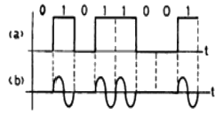
- ASK
- PSK
- FSK
- QAM
(정답률: 알수없음)
69. HDLC에서 비트열“0111 1111 0000”을 전송할 때 비트스터핑(bit stuffing)의 결과는?
- 0111 1011 10000
- 0111 0111 10000
- 0111 1100 110000
- 0111 1101 10000
(정답률: 알수없음)
70. 광섬유의 광손실 중 외부의 힘에 의한 손실은?
- 매크로 밴딩(Macro banding) 손실
- 마이크로 밴딩(Micro banding) 손실
- 나노 밴딩(Nano banding) 손실
- 피코 밴딩(Pico banding) 손실
(정답률: 알수없음)
71. 베이스 밴드(Base band) 전송에서 전송 신호의 상태가 3종류로 나타나는 방식은?
- 단류 NRZ 스페이스 방식
- 바이페이즈(biphase) 방식
- 바이폴라(bipolar) 방식
- 복류 NRZ 방식
(정답률: 알수없음)
72. 전송제어의 일종으로 모뎀과 같은 DCE를 감시 제어하는 것을 무엇이라 하는가?
- 흐름제어
- 회선제어
- 동기제어
- 에러제어
(정답률: 알수없음)
73. 4상식 위상변조에서 변조속도가 1200[baud]일 때 데이터의 신호속도는?
- 1200[b/s]
- 2400[b/s]
- 4800[b/s]
- 9600[b/s]
(정답률: 알수없음)
74. 데이터전송의 일괄처리방식을 맞게 설명한 것은?
- 데이터가 발생하는 즉시 처리하여 그 결과를 받아볼 수 있는 방식
- 일정량이나 일정기간의 데이터 전송량을 기억장치에 모았다가 처리하는 방식
- 통신회선으로 단말과 원격지의 컴퓨터 사이를 전기적으로 직접 결합하여 데이터를 처리하는 방식
- 대부분의 은행업무나 좌석예약 업무 등의 데이터 전송에서 일반적으로 이 방식을 사용한다.
(정답률: 알수없음)
75. 레이저(Laser) 광의 특징이 아닌 것은?
- 단색성을 갖는다.
- 편광 현상이 없다.
- 고휘도이다.
- 지향성을 갖는다.
(정답률: 알수없음)
76. 시분할 다중화기법 중 음성 30채널을 갖는 E1급 회선의 부호펄스의 주파수(클럭주파수)는?
- 1.544 Mbps
- 2.048 Mbps
- 6.312 Mbps
- 8.448 Mbps
(정답률: 알수없음)
77. 불평형 선로이기 때문에 저주파에 있어서는 외부로부터 방해를 받기 쉬우나 정전계, 전자계를 외부에 개방하지 않은 폐쇄성 선로이고, 외부도체의 차폐작용 때문에 고주파에 있어서 차폐성이 우수하고, 손실이 적어 장거리와 광대역 전송에 적합한 전송로는?
- 광케이블
- 동축케이블
- UTP 케이블
- 나선케이블
(정답률: 알수없음)
78. 디지털복조(M진 PSK)에서 수신기의 임계값은 어떤 범위내에 위치해야 하는가?
- ± π/M
- ± π/2M
- ± π/4M
- ± 2π/M
(정답률: 알수없음)
79. HDLC 전송제어에서 사용하는 동작 모드가 아닌 것은?
- 정규응답모드(NRM)
- 초기모드(IM)
- 비동기 평형모드(ABM)
- 비동기 응답모드(ARM)
(정답률: 알수없음)
80. 검출 후 재전송방식(ARQ)들 중에서 수신측에서 적절한 전송 프레임의 길이를 결정하여 전송효율을 높일 수 있는 재전송방식?
- go – back - n ARQ
- stop – and - wait ARQ
- adaptive - ARQ
- selective - repeat ARQ
(정답률: 알수없음)
5과목: 전자계산기일반 및 정보통신설비기준
81. 2진수 1100101을 8진수로 변환한 것은?
- (102)8
- (107)8
- (141)8
- (145)8
(정답률: 알수없음)
82. 마이크로프로세서에서 어큐뮬레이터의 설명 중 틀린 것은?
- 기억 소자이다.
- 연산한 결과를 저장 할 수 있다.
- 보조메모리 소자로서 저장용량이 크다.
- 연산에 사용할 수 있다.
(정답률: 알수없음)
83. 정보를 나타내는 부호에 여분으로 한 자리를 추가하여 사용하는 검출용 비트는?
- 패리티 비트(parity bit)
- 워드 패리티(word parity)
- 체크 비트(check bit)
- 에러 비트(error bit)
(정답률: 알수없음)
84. 다음 중 인터럽트를 발생시키는 장치들을 우선순위가 가장 높은 장치를 선두로 하여 우선순위에 따라 직렬로 연결한 하드웨어적인 우선 순위체제와 가장 관계 깊은 것은?
- 폴링(polling)
- 인터럽트 마스크(interrupt mask)
- 데이지 체인(daisy chain)
- 스풀링(spooling)
(정답률: 알수없음)
85. CPU가 무엇인가를 하고 있는가를 나타내는 상태를 메이저상태라고 하는데 다음 중 메이저 상태의 종류에 해당되지 않는 것은?
- Fetch 상태
- indirect 상태
- timing 상태
- interrupt 상태
(정답률: 알수없음)
86. 다음 중 컴퓨터에서 뺄셈 연산을 수행할 시 주로 사용되는 것은?
- 엔코더(encoder)
- 보수기
- 디코더(decoder)
- 누산기
(정답률: 알수없음)
87. 다음 프로그램 중 제어프로그램이 아닌 것은?
- 자료, 파일관리 프로그램
- 작업관리 프로그램
- 언어번역 프로그램
- 기억영역관리 프로그램
(정답률: 알수없음)
88. File의 개념을 옳게 표현한 것은?
- Code의 집합을 말한다.
- Record의 집합을 말한다.
- Field의 집합을 말한다.
- Character의 수를 말한다.
(정답률: 알수없음)
89. 원시프로그램(source program)을 컴파일(compile)하여 얻어지는 프로그램은?
- 실행 프로그램
- 목적 프로그램
- 유틸리티 프로그램
- 시스템 프로그램
(정답률: 알수없음)
90. 다음 중 데이터를 연산할 때 스텍(stack)을 사용하는 인스트럭션은?
- 0 주소 인스트럭션
- 1 주소 인스트럭션
- 2 주소 인스트럭션
- 3 주소 인스트럭션
(정답률: 알수없음)
91. 전기통신의 표준화에 관한 업무를 효율적으로 추진하기 위하여 설립한 법인은?
- 통신위원회
- 한국정보통신기술협회
- 형식승인위원회
- 한국통신품질보증단
(정답률: 알수없음)
92. 기간통신사업자가 전기통신업무에 제공되는 선로 등을 설치하기 위하여 타인의 토지 등을 사용하여야 할 때 필요한 조치로 적합하지 않은 것은?
- 소유자 또는 점유자와 미리 협의하여야 한다.
- 사유 토지 등은 사용이 가능하나 국유 토지 등은 사용이 불가능하다.
- 협의가 성립되지 않거나 협의를 할 수 없는 경우에는 관계법에 의하여 사용할 수 있다.
- 토지 등의 일시사용기간은 6월을 초과할 수 없다.
(정답률: 알수없음)
93. 전기통신기본법의 규정 내용으로 틀린 것은?
- 전기통신기술의 진흥에 관한 사항
- 전기통신기자재의 관리에 관한 사항
- 전기통신설비에 관한 사항
- 전기통신사업에 관한 사항
(정답률: 알수없음)
94. 정보화촉진 등에 관한 사항을 심의하기 위하여 국무총리 소속하에 설치한 기구는?
- 정보화추진위원회
- 정보통신연구진흥원
- 한국전산원
- 한국정보통신진흥협회
(정답률: 알수없음)
95. 다음 중 용어와 그 단위가 틀린 것은?
- 평형도 : 네퍼(Nep)
- 절대레벨 : 디비엠(dBm)
- 음량정격 : 데시벨(dB)
- 음압레벨 : 디비에스피엘(dBSPL)
(정답률: 알수없음)
96. 다음은 전력유도방지를 위한 전송설비 및 선로설비의 전력유도전압이다. 각 전압 중에서 제한치를 초과한 것은?
- 이상시 유도위험전압 : 650 볼트
- 상시 유도위험종전압 : 110 볼트
- 기기 오동작 유도종전압 : 15 볼트
- 잡음전압 : 1 밀리볼트
(정답률: 알수없음)
97. 정부가 정보화촉진을 위하여 수립하는 제반 시책의 기본원칙이 아닌 것은?
- 정부 투자의 확대와 공정 경쟁
- 교육, 문화, 과학기술, 환경분야의 정보화 촉진
- 정보통신기반의 고도화
- 정보화촉진에 대한 국제협력
(정답률: 알수없음)
98. 정보통신망에 관련된 기술 및 기기의 호환성과 연동성을 확보하기 위하여 기술기준을 제정하여 시행한다. 이 기술 기준을 제정하는 자는?
- 산업자원부장관
- 과학기술부장관
- 정보통신부장관
- 한국전산원장
(정답률: 알수없음)
99. 정보통신공사업법 시행령에서 정하고 있는 공사의 구분이 아닌 것은?
- 통신설비공사
- 무선설비공사
- 정보설비공사
- 방송설비공사
(정답률: 알수없음)
100. 정보통신윤리위원회에 대한 설명 중 잘못 된것은?
- 정보통신윤리에 대한 기본강령을 제시한다.
- 위원회의 조직과 운영에 관한 필요한 사항은 대통령령으로 정한다.
- 위원회는 공중파 방송의 위해 사항을 심의한다.
- 위원은 정보통신부장관이 위촉한다.
(정답률: 알수없음)